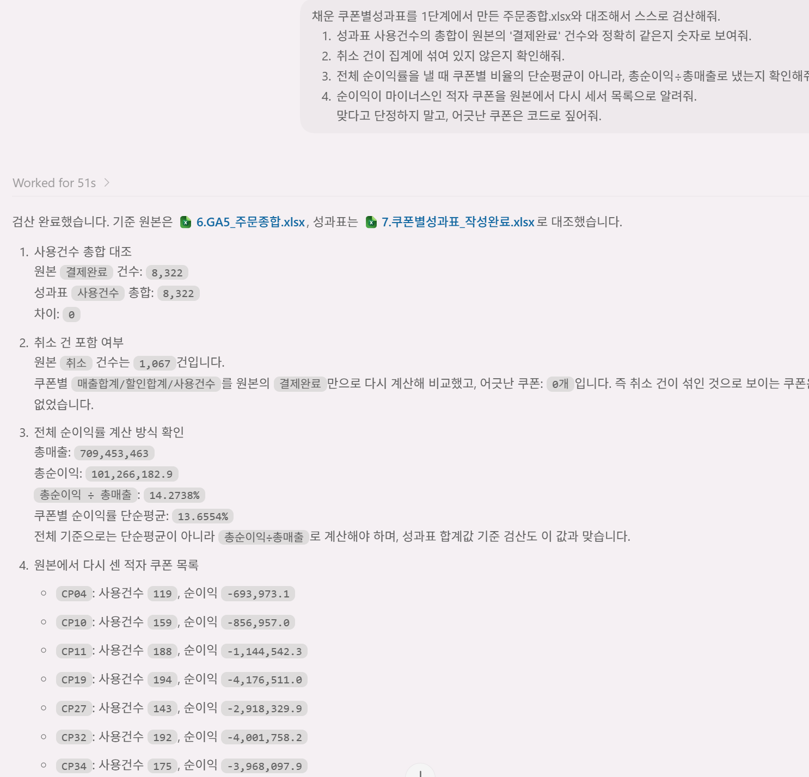

// 실습 3 · 쿠폰 성과 집계·인사이트
3 · 집계 검산¶
2단계에서 성과표 44줄이 깔끔하게 채워졌습니다. 그런데 이 표를 근거로 쿠폰을 접고 늘리는 결정을 내리게 될 텐데, 취소한 건이 섞이거나 평균을 잘못 내면 신뢰할 수 없는 데이터가 되어버립니다.
사람이 9천 건을 다시 확인할 수는 없으니, AI에게 되물어서 숫자로 증명시킵니다. 이게 집계를 신뢰할 수 있는 자산으로 바꾸는 습관입니다.
직접 시켜보세요¶
2단계에서 채운 성과표를 1단계 통합 파일과 놓고 아래 내용을 AI에게 검증시킵니다.
검증에 포함해볼 것 ✅¶
- 필터 확인 — 사용건수 총합이 결제완료 8,322건과 맞는지 (초과면 취소가 섞인 것)
- 건수 대조 — 쿠폰별 사용건수 = 원본에서 그 쿠폰의 결제완료 행 수인지
- 전체 순이익률 — 쿠폰별 비율의 단순평균이 아니라 총순이익÷총매출(가중)로 냈는지
- 적자 쿠폰 — 순이익이 마이너스인 쿠폰이 원본으로 다시 세도 맞는지
이런 건 빼세요 ❌¶
- 그냥 "집계 맞아?"라고만 묻기 (AI는 "맞다"고 답하기 쉽습니다)
- 쿠폰 몇 개만 눈으로 보고 넘어가기 (틀린 건 안 본 쿠폰에 숨어 있습니다)
예시 프롬프트¶
여러분 문장을 먼저 보낸 뒤에 열어보세요.
이렇게 물어볼 수 있습니다
채운 쿠폰별성과표를 1단계에서 만든 주문종합.xlsx와 대조해서 스스로 검산해줘.
1) 성과표 사용건수의 총합이 원본의 '결제완료' 건수와 정확히 같은지 숫자로 보여줘.
2) 취소 건이 집계에 섞여 있지 않은지 확인해줘.
3) 전체 순이익률을 낼 때 쿠폰별 비율의 단순평균이 아니라, 총순이익÷총매출로 냈는지 확인해줘.
4) 순이익이 마이너스인 적자 쿠폰을 원본에서 다시 세서 목록으로 알려줘.
맞다고 단정하지 말고, 어긋난 쿠폰은 코드로 짚어줘.실행 예시¶
이렇게 나오면 됩니다

체크포인트¶
- 사용건수 총합이 8,322로 맞다 (취소 1,067이 섞이지 않았다)
- 전체 순이익률을 가중(총순이익÷총매출)으로 냈다
- 적자 쿠폰 목록을 원본으로 다시 확인했다 (예:
CP04)